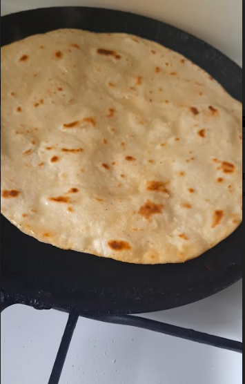

Chapati Recipe

Description
Chapati is a Kenyan dish which involves pan frying kneaded wheat dough till golden brown. This delicacy is common
around Christmas time and needs practice to master. Preparation time is around two hours depending on the cooking style
Once finished the dish can be served with a variety of stews ranging from beef and chicken to beans and green grams. Generally,
two chapatis serve one person.
Ingredients
- Wheat flour
- Lukewarm water
- Sugar
- Salt
- Vegetable Oil
Steps
- Mix 8 cups of wheat flour with 2 teaspoons of salt and one tablespoon of sugar
- Add 8 tablespoons of oil and 450 ml of lukewarm water
- Knead the dough thoroughly until it becomes compact and all the flour is mixed with the oil and water
- Leave the dough for thirty minutes for it to rise
- Roll the dough into a big oval and evenly apply a tablespoon of oil
- Roll the oval into a long strip.
- Cut the strip into 8 equal parts
- Fold each part into a ball
- Roll each ball into a circle
- Pan fry each circle till golden brown
- Serve while hot